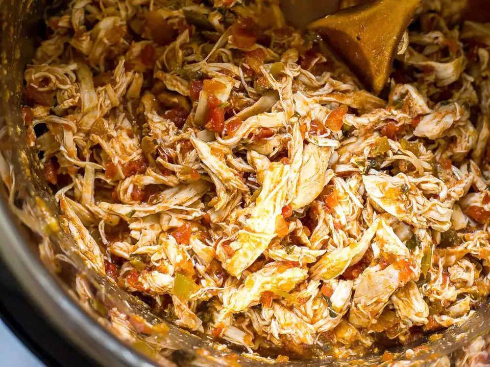

Home
Easy Slow Cooker Salsa Chicken

This crockpot salsa chicken is simple but so flavorful. Add to tortillas or atop fresh salad greens or rice.
Ingredients
-
3 chicken breasts
-
1 teaspoon chili powder
-
1 teaspoon garlic powder
-
1 teaspoon ground cumin
-
1 teaspoon onion powder
-
1 (15.5 ounce) jar salsa
-
1 (4 ounce) can chopped green chile peppers
steps
- Place chicken in the bottom of a slow cooker. Sprinkle with chili
powder, garlic powder, cumin, and onion powder. Top evenly with salsa and green chile peppers.
- Cook on Low until chicken breasts are very tender, 6 to 8 hours. An instant-read thermometer
inserted into the center should read at least 165 degrees F (74 degrees C). Shred chicken with 2 forks